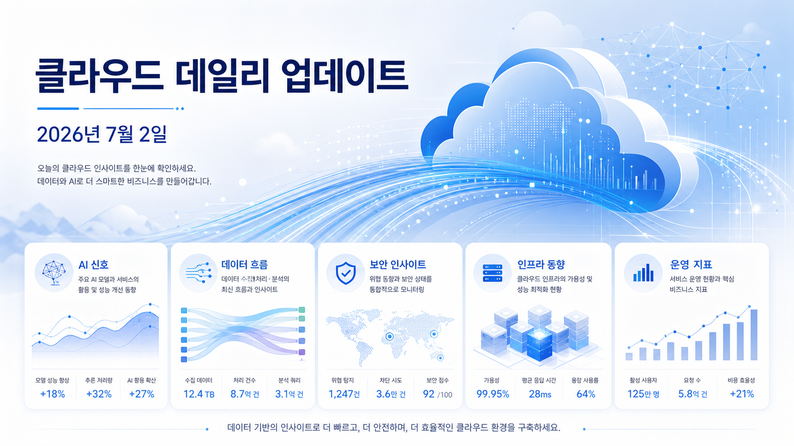
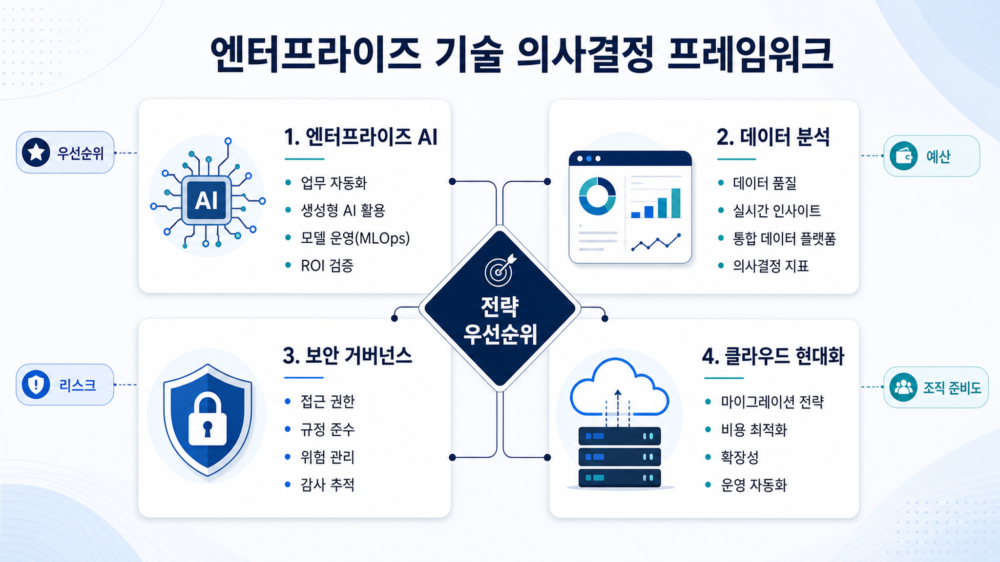
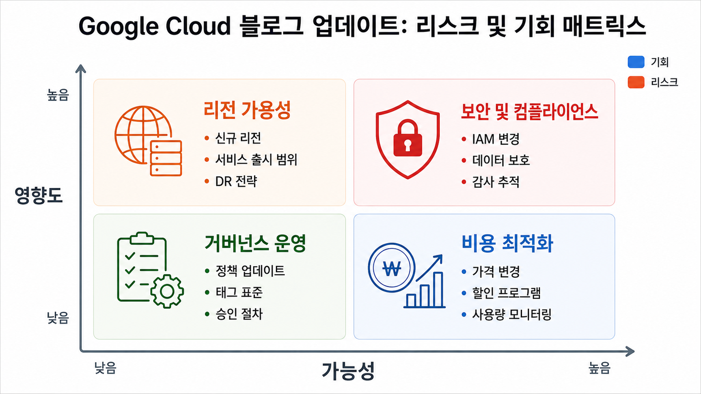

발행일 2026-07-01
GKE 인퍼런스 게이트웨이(Inference Gateway), 프리픽스 캐싱으로 AI 추론 가속화 | Google Cloud 블로그
GKE 인퍼런스 게이트웨이(Inference Gateway)는 프리픽스 캐싱(Prefix caching) 및 최적화된 라우팅 알고리즘으로 요청을 가장 적합한 액셀러레이터에 전달합니다.
원문 출처 보기이번 실행에서 검증한 구글 클라우드 블로그 데이터를 바탕으로, 엔터프라이즈 인공지능·데이터·클라우드 의사결정자가 볼 변화와 확인 포인트를 정리했습니다.

발행일 2026-07-01
GKE 인퍼런스 게이트웨이(Inference Gateway)는 프리픽스 캐싱(Prefix caching) 및 최적화된 라우팅 알고리즘으로 요청을 가장 적합한 액셀러레이터에 전달합니다.
원문 출처 보기발행일 2026-07-01
A new IDC Business Value White Paper found that you save an average of $4.3 million, driving a 268% three year ROI, with Mandiant Consulting.
원문 출처 보기발행일 2026-07-01
We understand that for the EU public sector, data protection is a prerequisite. We’re excited to reinforce this commitment with a major milestone.
원문 출처 보기발행일 2026-07-02
SOCRadar replaced its on prem, self managed databases so it could keep pace with the simultaneous demands of high velocity data ingestion and heavy, real time analytical queries.
원문 출처 보기발행일 2026-07-02
Discover how AlloyDB AI functions bring Gemini’s intelligence to your data while accelerating query speed and reducing costs.
원문 출처 보기
기술 관찰
본문에 명시된 서비스와 기능은 개별 워크로드의 데이터 처리, 인공지능 적용, 보안 통제, 데이터베이스 선택지에 영향을 줄 수 있습니다.
적용 판단
발표 내용만으로 비용·성능·리전·규정 준수 적합성을 확정할 수 없습니다. 공식 문서와 현재 테넌트 조건 확인이 필요합니다.
한국 기업 관점
한국 기업은 데이터 위치, 개인정보, 보안 심의, 기존 클라우드 표준과의 정합성을 함께 검토해야 합니다.

| 번호 | 문서 제목 | 발행일 | 근거 출처 |
|---|---|---|---|
| 1 | GKE 인퍼런스 게이트웨이(Inference Gateway), 프리픽스 캐싱으로 AI 추론 가속화 | Google Cloud 블로그 | 2026-07-01 | 출처 |
| 2 | New IDC study: How Mandiant transforms security into a competitive advantage | 2026-07-01 | 출처 |
| 3 | Google Cloud confirmed to offer a safer choice for EU public sector organizations with Dutch DPIA approval | 2026-07-01 | 출처 |
| 4 | SOCRadar powers rapid threat detection with AlloyDB and Gemini Enterprise | 2026-07-02 | 출처 |
| 5 | Boost Performance and Lower Costs with AlloyDB AI Functions | 2026-07-02 | 출처 |
목적: 일일 브리핑 히어로 인포그래픽
삽입 위치: hero 아래 첫 이미지
image2 prompt: Korean executive technology blog hero infographic about Google Cloud daily update on 2026-07-02, abstract cloud data and AI signals, readable Korean labels, clean corporate style, no logos, white and blue palette
권장 비율: 16:10
alt 텍스트: 구글 클라우드 일일 브리핑 핵심 흐름 인포그래픽
목적: 기업 적용 관점 시각화
삽입 위치: 기술 변화의 의미 섹션 뒤
image2 prompt: Korean infographic showing enterprise AI, data analytics, security governance and cloud modernization decision points, clean cards, readable Korean labels, no brand logo, professional blog illustration
권장 비율: 16:10
alt 텍스트: 엔터프라이즈 인공지능 데이터 클라우드 검토 포인트 시각화
목적: 리스크와 기회 요약
삽입 위치: 리스크와 거버넌스 섹션 뒤
image2 prompt: Korean corporate risk and opportunity matrix for Google Cloud blog updates, simple icons, governance, cost, region availability, security, readable Korean labels, no logos
권장 비율: 16:10
alt 텍스트: 구글 클라우드 기술 변화 리스크와 기회 요약 인포그래픽